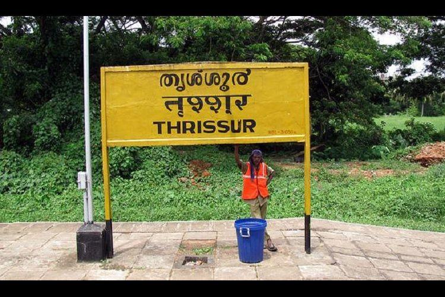

Thrissur
1 / 6

Vadakkumnathan_Temple
3 / 6

thrissur pooram
5 / 6

Railway station
6 / 6

kerala kalamandalam
Thrissur, formerly Trichur, city, central Kerala state, southwestern India. The city is located 12 miles (19 km) inland from the Arabian Sea coast on an extensive lagoon system.
Thrissur, a commercial and cultural centre, is considered to be the oldest city on the west coast of India. Its name means “small sacred place.” The city is built around a hillock topped by the Vadakkumnathan Temple (dedicated to Shiva), the focus of an annual festival. A city of many faiths, Thrissur is also home to some of the oldest mosques and churches in the country. Its industries include cotton weaving, rice and oilseed milling, soap manufacturing, and sawmilling. The city is also a retail hub for the state of Kerala, and is home to some of the largest jewellery and textile businesses in the region. Thrissur has colleges affiliated with the University of Calicut, a museum, and zoological gardens. The city has good road and rail connections with the rest of Kerala and with the interior.
Thrissur is one of the oldest cities in Kerala. The legend says, the city was the town created by Lord Parasurama (6th incarnation of Lord Vishnu) soon after formation of Kerala, by creating a large Shiva temple. The entire city is formed around the grand Shiva temple known as Vadakumnathan Temple. The city's original name was Thir-Shiva-Perur (Sacred city of Shiva), which got later shortened as Thrissur. The temple is in the center of a mega roundabout that is of 64 acres. This round is known as Swaraj Round and the giant square in front of the temple is known as Thekkinkad Maidan. All roads of Thrissur connect to this.
Perhaps when Indians think of Thrissur, the first image would be the famous Thrissur Pooram festival, the most colourful and spectacular temple festival of Kerala. This is also known as largest temple festival in India. The festival is at the Vadakkumnathan temple grounds, in April or May. The city is equally famous for the final celebrations of the Onam festival, which is the national festival of Kerala. It hosts the famous Pulikali during Onam celebrations in August or September (depends on Malayalam calendar). Apart from festivals and culture, Thrissur is also well known as one of the best shopping centers in Kerala for silks and gold ornaments. The city is also known as Entrepreneurial City, due to presence of large number of entrepreneurs working in various trades.
By air
Kochi International Airport, is 58 km away from Thrissur City with direct flights from the Middle East, Singapore, Maldives, Europe and Sri Lanka. Kozhikode Airport is 80 km away from Thrissur City.
Kozhikode International Airport located 80 Kms away as well as Coimbatore Airport located 115 Kms away are other nearby airports, offering international connectivity as well as domestic connections.
By train
Thrissur City is well connected and serviced by rail to all major cities in India. Thrissur Railway Station is an major railway head in South India. Daily trains are avaliable to leading cities like Mumbai, New Delhi, Kolkata, Bangalore, Chennai, Mangalore and Hyderabad and almost every part of India.
Kerala's largest Railway Junction - Shornur Junction is just 33 Km away from the city and is considered as Rail Gateway of Kerala, where all trains from and to Kerala touches. Thrissur Railway Station is a major station in the Southern Railway network and all important trains stop here. Regular train services are there to Cochin and Palakkad are available from here. Thrissur also has a suburban station Punkunnam, but only local passenger trains and a few express trains stops here.
By bus
You can also get in to Thrissur City by bus from cities like Kochi, Kozhikode, Kannur, Thiruvananthapuram, Coimbatore, Mangalore, Bangalore, Chennai and Mumbai.
Thrissur is well connected by NH 544, NH 47,NH 17 and NH 66 to other cities like Kochi, Kozhikode, Chennai, Bangalore, Coimbatore, Madurai and Pollachi by road.
The 'Sakthan Thampuran' Bus Stand located at the Southern part of the city is the origin point of buses proceeding towards Palakkad.The 'Municipal Bus Stand' located at Round South caters to the local bus transport. From North bus stand, there are buses which goes to Shoranur and Palakkad. The bus station of the state owned Transport corporation (KSRTC) is located at Chettiyangadi and is quite close to the Railway Station.
Get around
Bus: Private bus service system and Government-run KSRTC is a good choice for travelling. .
Autorickshaw: Auto rickshaws are the main form of local transport, if you don't have your own means of transportation. Autorickshaws running in the city limits are to use fare meters, while the ones from the adjacent areas need not use them. However it is a rule that such autorickshaws without metres should not pick up passengers within city limits. There is a pre-paid auto rickshaw counter at Thrissur Railway Station.
Taxi: Local taxis are also available at cheap rates. Please note that there are no local Taxis (Yellow cabs or the one's having yellow roof and black body). The taxis known as 'Tourist taxis' are meant for long travel or one day trips.
Car: There are many car rental companies offering cars with drivers or self drive.
Bike: Bikes are available for rental in Thrissur City. This is available for a week or more than that.
Walk: Many places of attractions are near by each in the city limit other so you could walk between them.